Overview
As of 2024 approximately 11% of children in the UK were living with a disability or chronic illness. This demographic is disproportionately affected compared to their non-disabled peers when it comes to their education, and there is currently no streamlined procedure or service in place to ensure these young people have equal access to education.
Echo was developed with the vision of further developing remote learning tools that were established during the Covid-19 pandemic to benefit these students and provide them with the opportunity access education regardless of their health status.
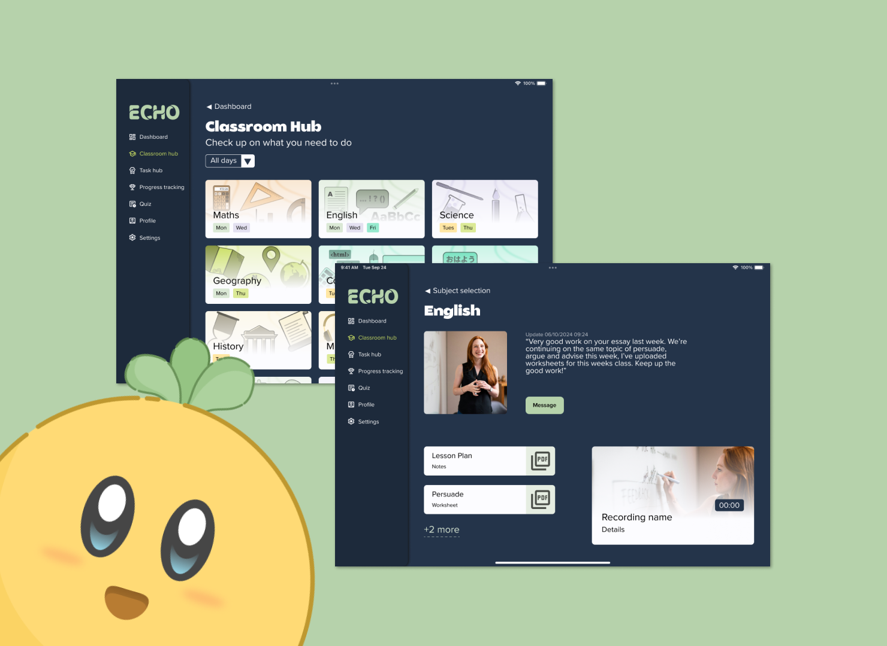
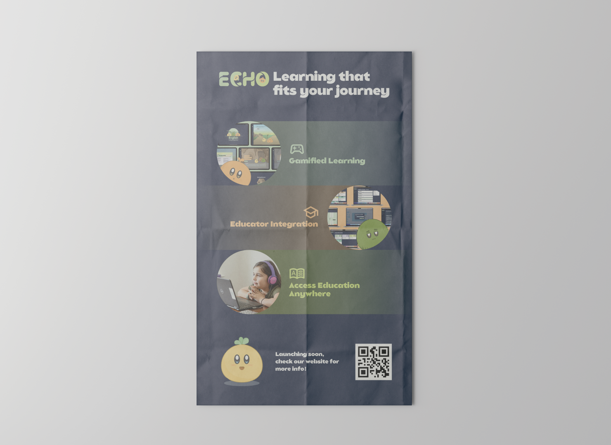
The Process
My project started with extensive desk and user research, allowing me to work towards a nuanced solution that addresses the needs of not only the students, but their educators as well. I conducted surveys and user interviews with four demographics:
- Past students
- Current students
- Educators
- Parents
Gaining the perspective of these demographics allowed me to build a series of persona spectrums, identifying the pain points and desires from all people involved.
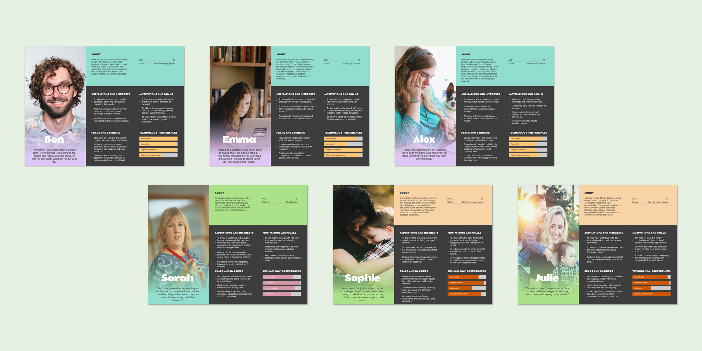
To further analyse the information gathered from these demographics, I created empathy maps and user journey maps. This was very valuable in helping me understand the mindset of the users, and identify specific roadblocks that contribute to the ongoing problem of there being a lack of guidance for students having to work remotely. It became increasingly obvious through the research phase that an educator platform would need to be implemented on top of the student platform.
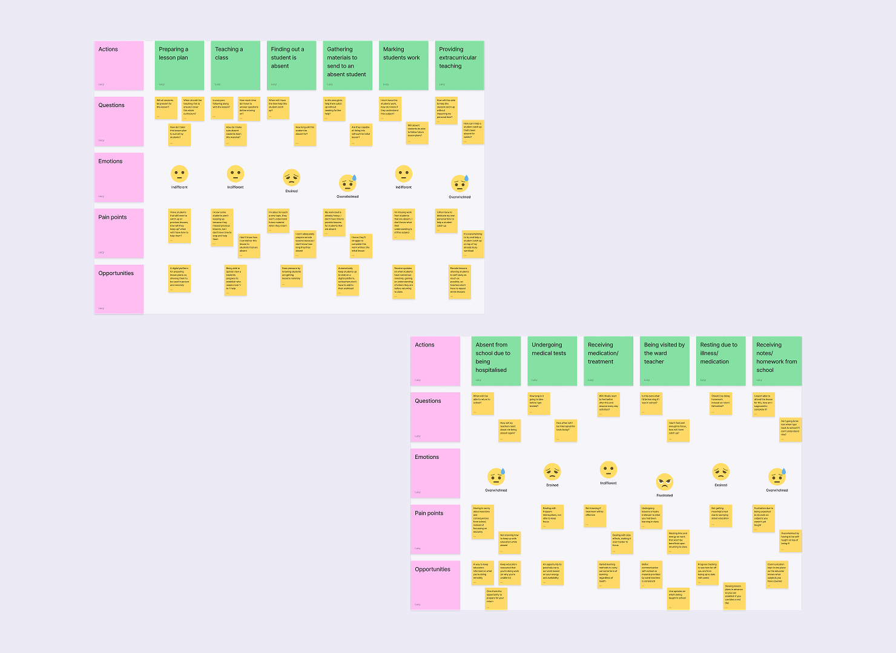
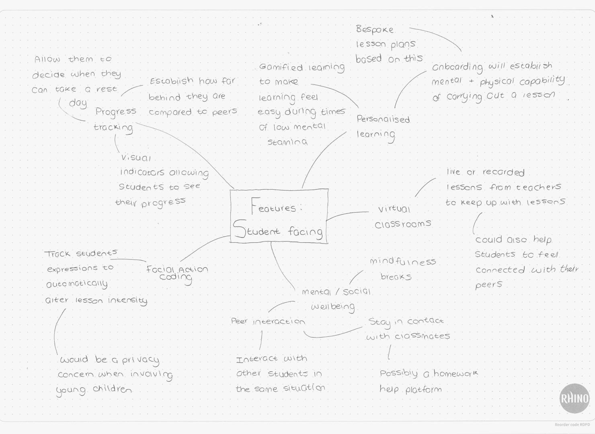
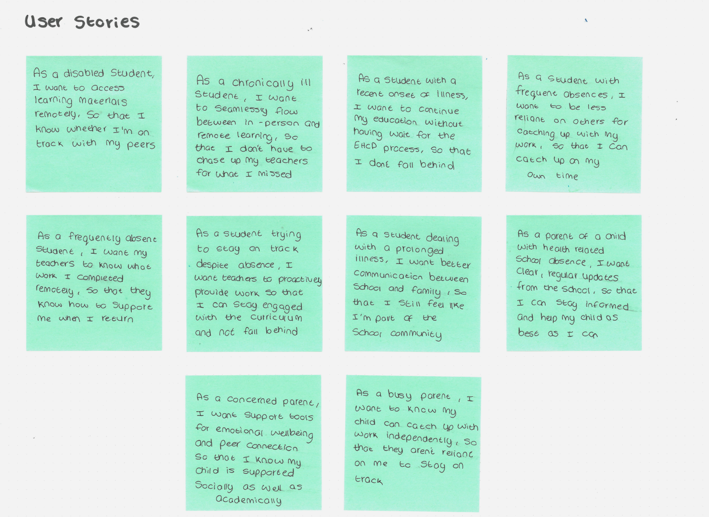
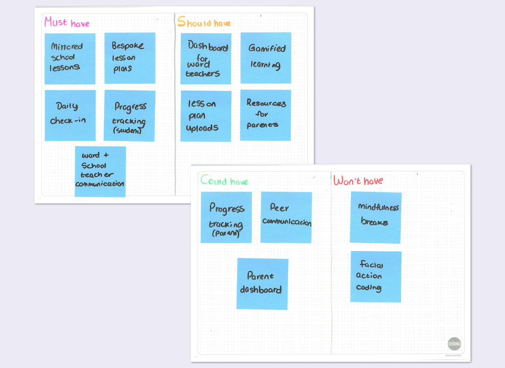
With the primary features now identified, I created user flows and information architecture to begin structuring the content needed. I began developing wireframes and iterated upon them based on continual feedback, until I felt features were refined enough to be developed digitally. It became apparent during this process that the student platform would need a highly illustrative and imagery based UI.
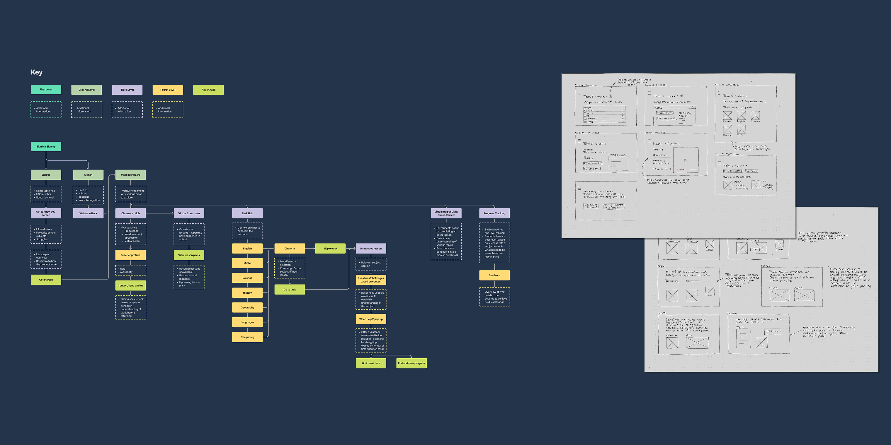
I began developing low to mid fidelity wireframes which revealed the scale of illustrations needed. This was a much more iterative process than I had anticipated, I had difficulty gamifying the lessons without impacting the content that was being delivered. However, through feedback and usability testing, I was able to create a satisfactory outcome that I could develop further into a high fidelity prototype.
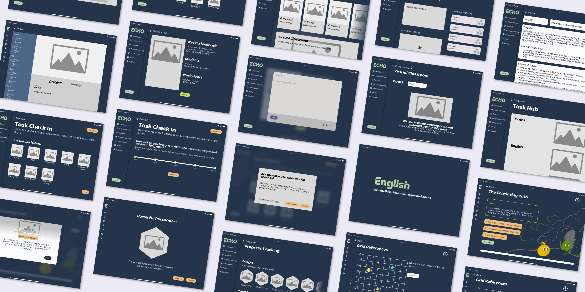
The Outcome
The final outcome, Echo, is a high-fidelity prototype that includes a student and an educator platform. The student platform provides features such as:
- A classroom hub - This is where students can view work uploaded from their teachers, allowing them to access material such as lesson recordings, lesson plans, and worksheets. This feature aims to ensure students know exactly what their peers are learning in order to re-integrate into the classroom with ease.
- A task hub - Here students can carry out gamified lessons based on the work that has been uploaded by their teacher. With a task check-in feature, it ensures lessons are tailored to the students current mood and energy levels, making education feel more approachable during times of ill-health.
- A weekly quiz - Students can test and solidify their knowledge on tasks carried out that week, with insights being sent to their educators so they can best prepare for the students return.
- Progress tracking - A collection of badges allowing students to see how much progress they have made on the platform.
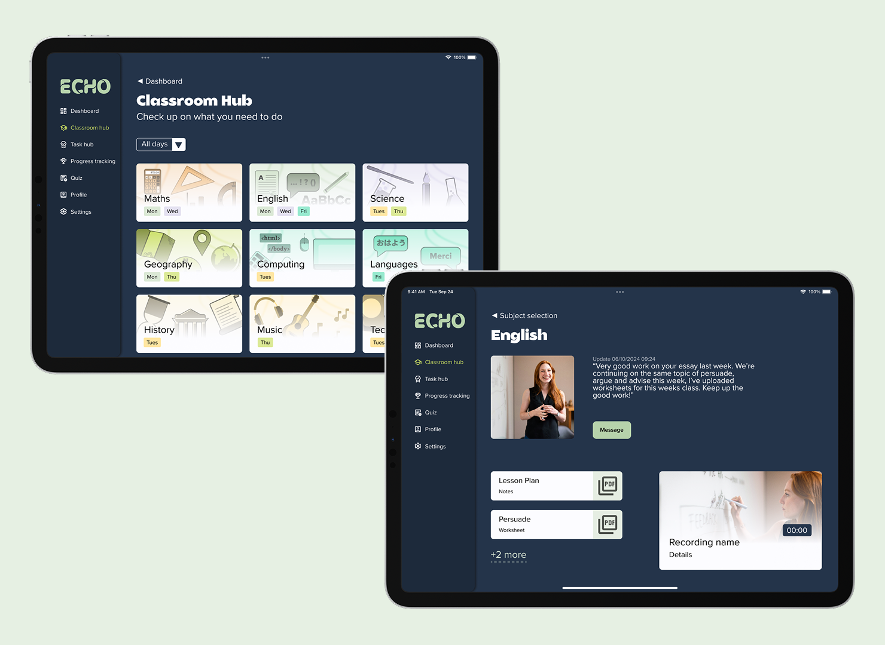
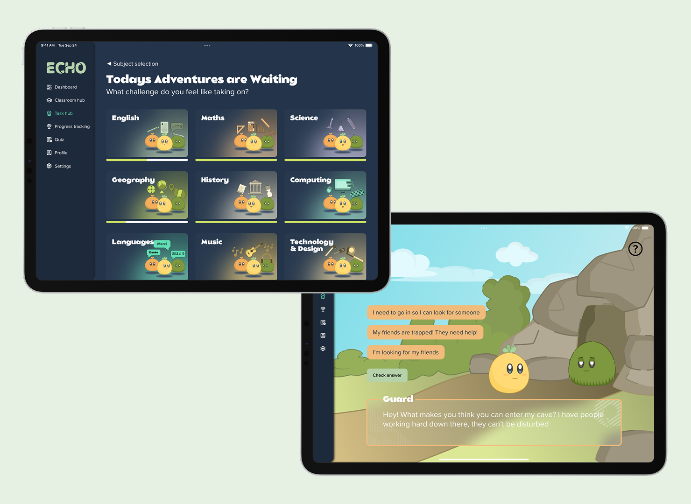
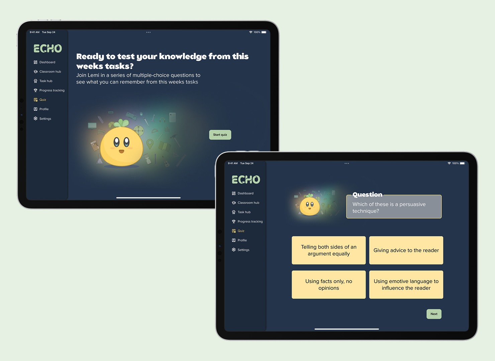
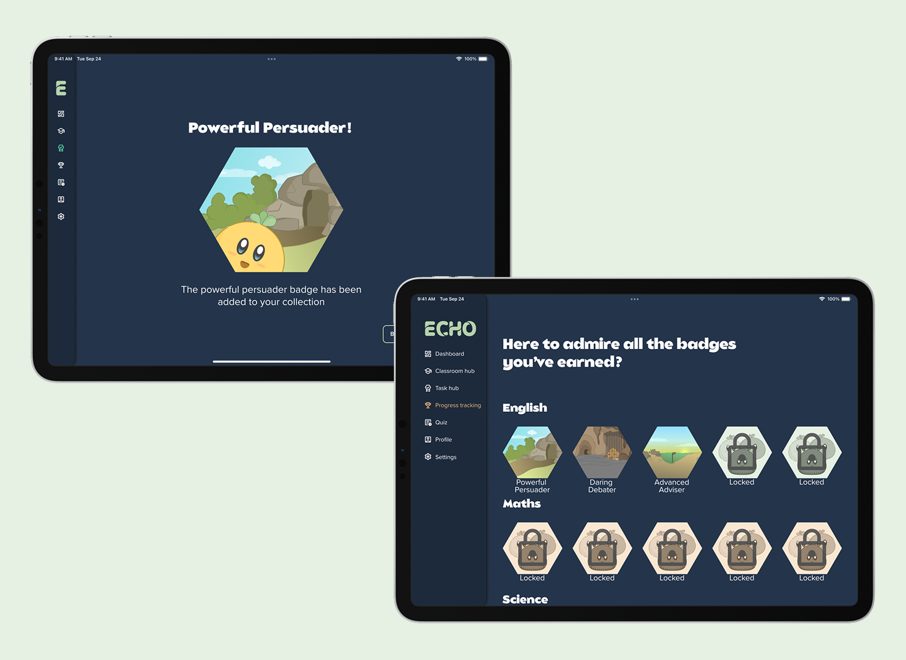
The educator platform ensures the work provided on the student platform is consistent with what is being taught in school. It also provides educators with a service that allows them to keep track of absent students and prepare necessary material for their return. With features such as:
- An online lesson planner - Educators can create and upload lesson plans digitally, meaning work is ready for students to access as and when it’s needed, without adding to their existing workload.
- Class dashboard - Here, they can access their class register and view what work has been completed by students using the platform, allowing them to identify potential struggles before the student returns.
By combining the student and educator platforms, Echo offers a comprehensive solution to an issue that currently lacks a unified approach. Its flexible learning options empower chronically absent students with a sense of control in what can often feel like an uncontrollable situation.
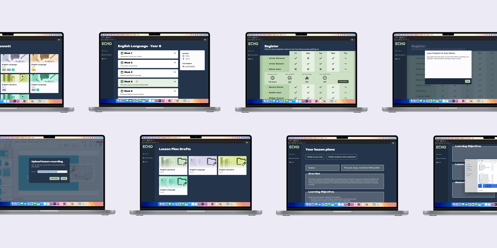
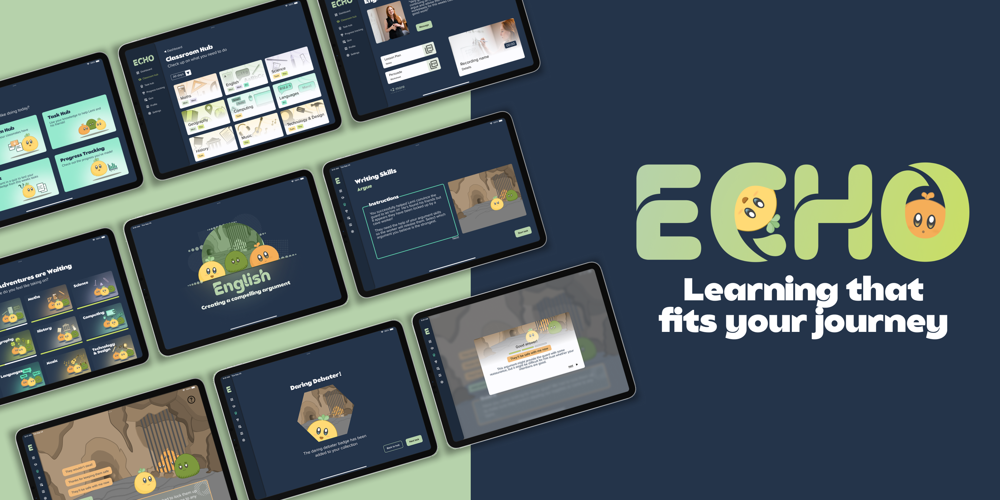